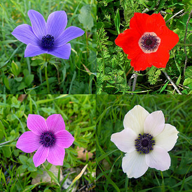

| flawer type |
descreption |
| calanit |
Anemone species are perennial geophytes. Globally, they are common in temperate or cool climates in the northern and southern hemisphere.
In israel, the genus is represented by a single species - anemone coronaria - a protected plant that is common from the north of the country to the Negev |
| to go back |